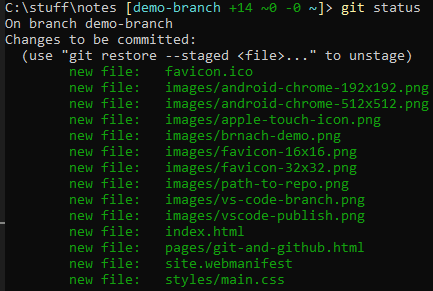

Contents
-
What is Git?
-
What is Github?
-
How to Create a Repository
-
How to Add Collaborators
-
How to Clone a Repository
-
How to Create a branch
-
How to Publish your branch
-
How to Commit your changes
-
How to Push your commits
-
How to get the latest changes
-
How to merge your changes in
-
How to host your site in github pages.
What is Git?
Git is a piece of software that tracks changes to files. It is mostly used by software developers to
manage changes and to coordinate between each other. Git uses the concept of repositories
(often referred to as repos). These are basically just folders in which git will track any changes
to
files and folders.
Git saves changes to files in what are called commits. A commit can be thought of like a save point.
Every batch of changes is stored in a commit and will have a unique id. One of the great features of
git
is that you can rollback to an earlier commit if you make a mistake. This is often used to correct
broken releases.
Further Reading
You can find out more at the links below. Also google is your friend here there are loads of
resources
online easily found with a quick search.
What is Github?
Login
Github is a website that stores git repositories. It has a lot of extra features but basically it is
a
central place to store your repositories.
This is really useful for developers collaborating on projects. Usually there will be a central
repository in github and developers clone the repository to their local machines.
Any
changes can be made safely and merged in after review.
The basic flow goes like this (more details below):
-
Clone the repo locally or pull the latest changes if you
already
have it locally.
-
Create a branch.
-
Publish that branch to github.
-
Stage any changes then commit them. Repeat as many times as
you like.
-
Push those changes to github. Note you will need to be a collaborator on the
repo to allow you to do this.
-
Create a Pull Request and get a peer review.
-
Merge in to master.
How to Create a Repository
To get started you will need a repository in github. This is really easy to do and this article has a
great description.
How to Add Collaborators
If you want other developers to work on the same code base then you will need to add them as
collaborators. To do this go to the "Settings" tab on your repo and select the "Collaborators"
option on the left menu. Then select the green "Add people". You can enter someones github user id
to find them.
How to Clone a Repository
Cloning a repository creates a local copy of the repository on your machine and allows you to track
the changes between the two.
git clone "path_to_repository"
Replace "path_to_repository" you can get this from git hub by going to the repo and clicking the down
arrow next to the green "Code" button and copying the url under the https tab.
e.g.
git clone https://github.com/alexw1983/notes.git
NOTE:You will need to be in the top level folder of your
repository for this to work.
How to Create a Branch
A branch is a way of making changes withour affecting our master branch. A branch can be thought of
as a copy of the code. You can switch between branches as much as you like. All repositories come
with one branch as standard either called master or main. You
should create a branch before making any changes.
git checkout -b "name-of-your-branch"
Replace "name-of-your-branch" with a sensible name for your branch. You should avoid using spaces in
your branch names.
You can see which branch you are on by using
git branch
VSCode also has tools to help you with branches. If you look at the bar in the bottom left you can
see which branch you are on next to the git logo.
If you click on this branch name VSCode will give you some options to manage branches as well.
How to Publish your Branch
NOTE:You will need to be in the top level folder of your
repository for this to work.
NOTE: You will need to be added as a collaborator of the repo in
order to
do
this.
You will need to publish your branch to github so that the remote repository knows about your
changes.
git push -u origin "name_of_your_branch"
Alternatively you can use VSCode. The little button next to the branch name that looks like a cloud
with an arrow in it will publish your branch. Note that all of these VScode helpers are just running
the commands we are typing.
How to Commit your changes
NOTE:You will need to be in the top level folder of your
repository for this to work.
In git a commit is a save point of your changes. You can create as many as you want. Each commit
will have a unique id.
To create a commit requires 2 steps the first is called staging and is a way to preview what you are
going to commit. This is useful if you don't want to commit everything or what to double check
things.The second stage is actually commit the things you have staged.
Staging
To stage all the files you have changed use the following. Note the full stop after the add.
git add .
Alternatively you can specify file names.
You can use the the following to see which files you have staged.
git status

Alternatively you can use the VSCode git hub menu. On the left menu click on the github icon (often
the third one down) and you should see the following:
You can use the various buttons here to stage or unstage your changes. If you click on one of the
file names VSCode will show you the changes you have made.

Commit
Once you have staged your changes and are happy to commit them you can use the following:
git commit -m "MESSAGE"
Replace the "MESSAGE" with a sensible note (wrapped in double quotes) about what changes you are
making. Note this
will be visible to yourself and other developers forever so it is good practice to make the message
meaningful.
For Example
git commit -m "Added a paragraph to the github page"
To view all your commits you can use
git log
Alternatively the timeline view in VSCode can show you this as well.
Summary
git add .
git commit -m "MESSAGE GOES HERE"
How to Push your commits
NOTE:You will need to be in the top level folder of your
repository for this to work.
NOTE: You will need to be added as a collaborator of the repo in
order to
do
this.
To add your commits to the remote branch in github you need to push them up.
git push
That's about it.
Alternatively you can use VSCode. The same button we used to publish the branch can be used to push
and pull any changes as well.
How to get the latest changes
NOTE:You will need to be in the top level folder of your
repository for this to work.
Often other developers will have made changes to the master branch (or any other branch) whilst you
have been working on your stuff. To get the latest changes to any branch you need to pull them down.
It is advised to do this before branching off master.
git pull
Alternatively you can use VSCode. The same button we used to publish the branch can be used to push
and pull any changes as well.
How to merge your changes in
Once you have created your branch and pushed it up to github you can go and have a look at it and
create a Pull Request. A Pull Request is a way of checking your work and getting other developers to
review it before moving it in.
Go to your repo in github then go to the code tab and click on branches.
Next to your branch click on "New Pull Request"

On the next screen fill in a useful comment. Other developers will be able to see this so take some
time here. When your done click on "Create pull request".
You can review the changes by going to the "Files Changed" tab and adding a review. "Approve" and
"Submit" the review if you are happy. Request changes otherwise.
When the PR has been approved. You can click on "Merge pull request" on the "Conversation" tab. You
will be asked to confirm. Do so if you want to merge it in.
Once this is done your changes will appear on the master branch.
To see this happening, switch to the master branch
git checkout master
Then pull the latest changes.
git pull
You should see your changes appear.
How to host your site in github pages.
NOTE:This is slightly different to other descriptions of how to do
this (explained below).
Github can be used to host a static website on the internet. There is a lot of functionality here
that you can use including using this a CMS or similar. For now we are just going to host a static
page.
Go to "Settings" then down to the "Pages" tab on left
Under the "Source" drop down select the main branch. Then click on Save.
You will then see the URL of your site. Note this will take about 10 minutes to come through.
The github documentation will give you a slightly different way of doing this were you create the
repo with a specific name. This is used for hosting a main site for your organisation and is
recommended best practice in most cases.
However for our purposes we have done it slighlty differently. The only downside is that the url
will have the repo name in it. For this example this is fine.
Further Reading